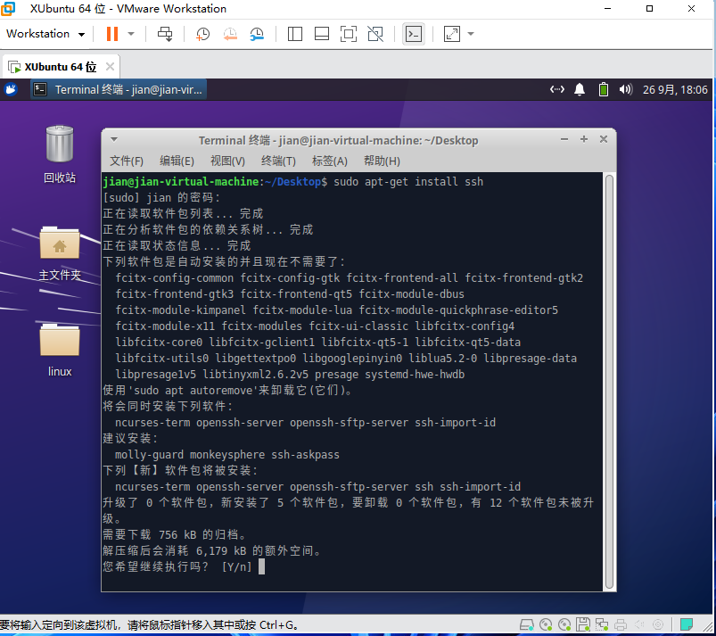
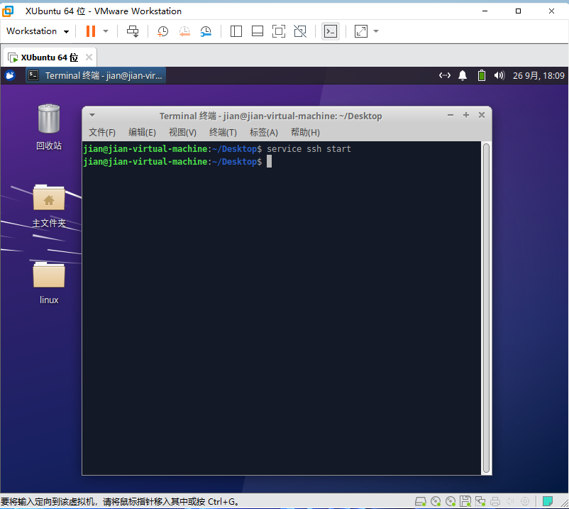
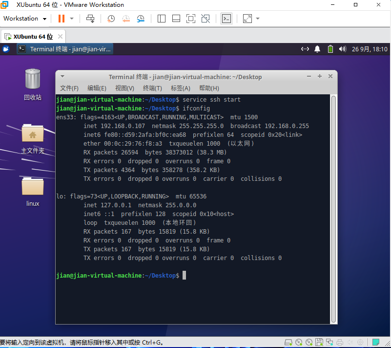
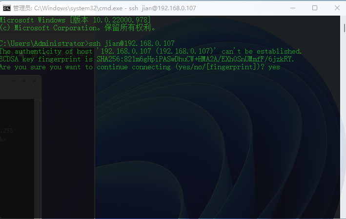
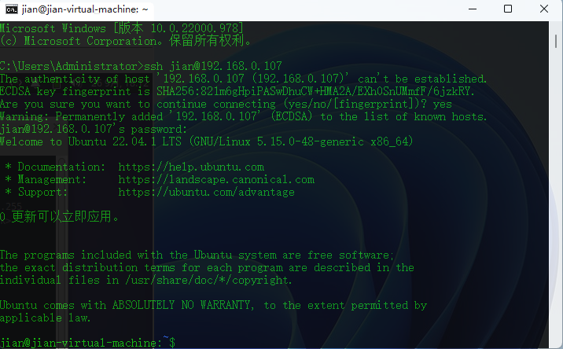
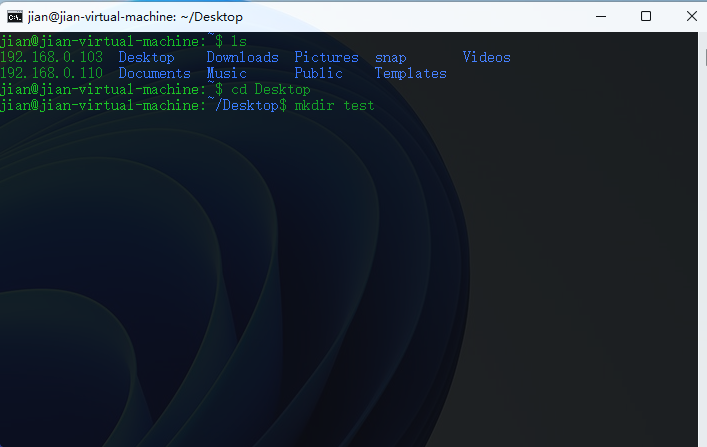
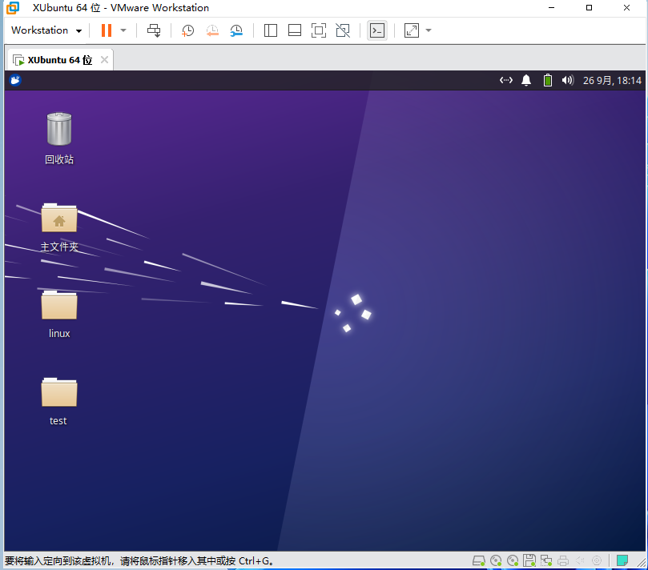

我笔记本肾不好,Ubuntu有点吃力,我换成性能要求低一点的xubuntu了
SSH是一种网络协议，用于计算机之间的加密登录
Ubuntu下载并开启ssh
控制台输入sudo apt-get install ssh 下载ssh

控制台输入service ssh start 开启ssh
remember:linux大部分情况下执行完命令后没报错就是执行成功了

ifconfig查看ip

打开windows的cmd用来连接Linux，或者使用第三方工具推荐
xshell
格式:ssh linux用户名@ip地址
ssh jian@192.168.0.107

呐，这样就是连接成功了

cd Desktop 切换到桌面路径
mkdir test 创建一个test文件夹

返回到ubuntu看一眼

嗯，完美